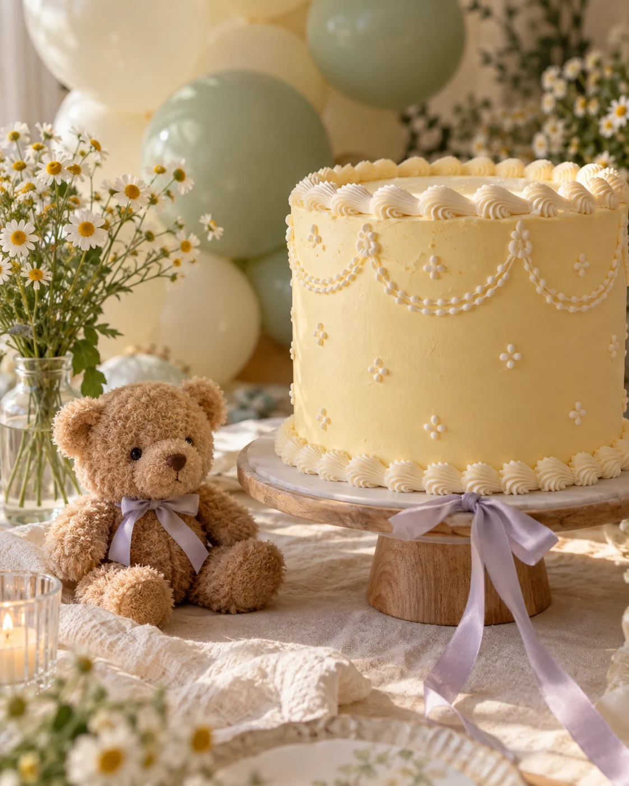

AS FESTAS
O motivo é vosso.
A alegria é de todos.
Aniversários, baby showers e encontros em família.
Conte-nos o que quer celebrar — começamos por aí.
01 · ANIVERSÁRIOS
Mais uma volta ao sol.
Uma festa só deles.
Amigos, brincadeiras e a contagem decrescente até aos parabéns. Comece por nos dizer a idade do aniversariante e a data que tem em mente.
- Data e horário pretendidos
- Idade do aniversariante
- Número previsto de crianças e adultos

02 · BABY SHOWERS
Antes do primeiro olá,
um encontro especial.
Juntar as pessoas mais próximas para celebrar a chegada de um bebé. Um momento para partilhar a expectativa, o carinho e tudo o que está para vir.
Partilhe a sua ideia com a Festa em Festa e confirme as possibilidades para o encontro.
Falar sobre um baby shower03 · EM FAMÍLIA
Não é preciso crescer
mais um ano para
juntar toda a gente.
Às vezes, o melhor motivo é simplesmente estar juntos. Conte-nos qual é a ocasião e quantas pessoas gostaria de reunir.
Conversar sobre o encontroANTES DE ESCOLHER
Uma boa festa
começa com
boas respostas.
Quanto custa uma festa?
O valor e o que está incluído devem ser confirmados com a equipa. Envie a data, a ocasião e o número previsto de convidados para receber informações adequadas ao seu pedido.
Posso escolher o tema ou levar decoração?
Partilhe o tema que imagina e pergunte pelas regras de decoração. A disponibilidade de decoração, lanche, bolo ou outros serviços deve ser combinada diretamente com a equipa.
Qual é a capacidade e a duração da festa?
Confirme a lotação, os horários e a duração disponível antes de reservar. No pedido pode indicar o número de crianças e adultos e a sua preferência de horário.
O pedido pelo site confirma a reserva?
Não. O site prepara uma mensagem para o WhatsApp. A equipa confirma a disponibilidade e explica as condições para avançar com a reserva.
VAMOS FAZER A FESTA?
A próxima festa
começa com uma data.
Conte-nos o que tem em mente. Vamos começar a planear?
Pedir disponibilidade